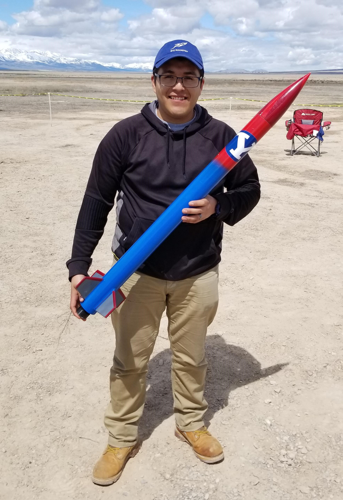

About me
Hey there! I am Juan Cuevas, and I am a current Mechanical Engineer student at Brigham Young University. I am currently taking a web programming class, which is teaching me great tools that can connect me with the world. Through this website, I will not only be able to showcase what I have accomplished in this class, but I would like to show who I am as well.
I am from Argentina, and I came to the USA with the purpose to study English. However, as I met with my classmates and friends, they inspired me to stay and study Mechanical Engineering. After my first year of of school, I met my wife, and we are very happy together.
I like to work with airplanes, since it has been one of my childhood hobbies. Also, I like Formula 1 and many other racing categories. Lastly, I recently got into rocketry, and I was able to achieve my level 1 certification See Fig. 1. I was able to reach around 1000 from the ground, and it recovery was amazing! Currently, I am working on my level 2 rocket. The goal is to reach 5000 ft.
Figure 1 - JAC-1 and me a few minutes before launching it to 1000 ft.
Mindly Drinking
Mindly Drinking is an app design to help my family and friends to drink the necessary ammount of water. To navigate to this website, click here.
Simon project
The purpose of this project was to gain experience between different techonolgies, and how we could implement them. For example, we learned how to build the structure using HTML, and then CSS to give the website style and desing. Click here to navigate to the website.
Web programming assignments
These CodePen show some of the experimental tools I used in my projects.
HTML
- Introduction - Basic HTML page example
- Structure - All the elements for creating page structure
- Input - All the elements for receiving user input
- Media - All the elements for rendering media objects